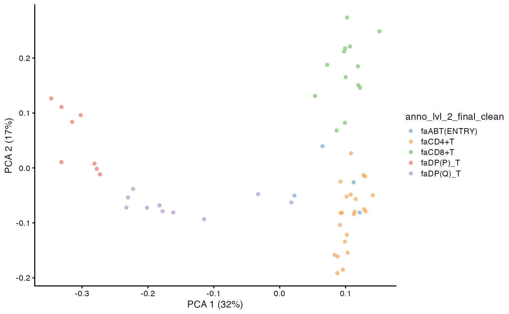
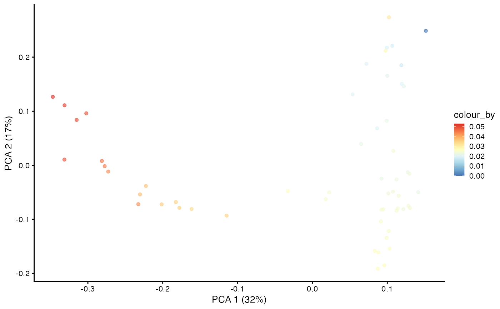
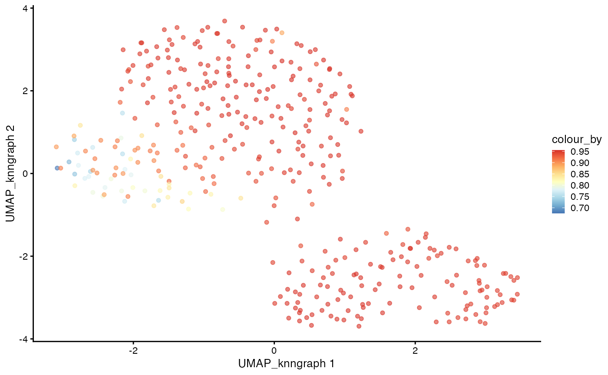
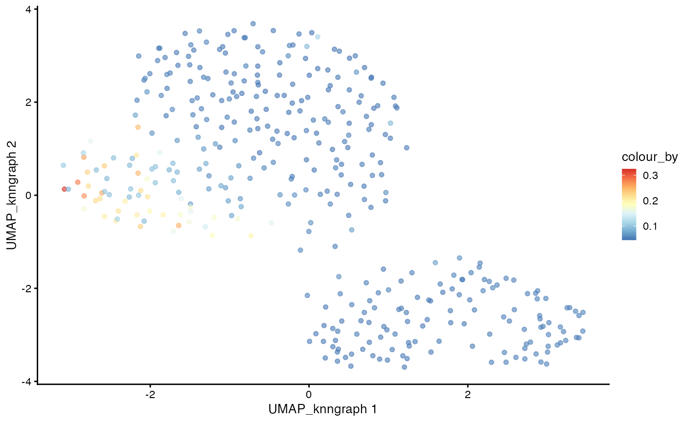

vignettes/articles/dandelionR.Rmd
dandelionR.RmddandelionR is an R package for performing single-cell
immune repertoire trajectory analysis, based on the original python
implementation in dandelion.
It provides all the necessary tools to interface with scRepertoire and a custom implementation of absorbing markov chain for pseudotime inference, inspired based on the palantir python package.
If using dandelionR, please cite the article: Yu, J., et al., dandelionR: Single-cell immune repertoire trajectory analysis in R. Computational and Structural Biotechnology Journal. 2025.
if (!require("BiocManager", quietly = TRUE))
install.packages("BiocManager")
BiocManager::install("dandelionR")
remotes::install_github("tuonglab/dandelionR", dependencies = TRUE)Due to size limitations of the package, we have provided a very trimmed down version of the demo data to ~2000 cells. The full dataset can be found here accordingly: GEX - https://developmental.cellatlas.io/fetal-immune (Lymphoid Cells) and VDJ - https://github.com/zktuong/dandelion-demo-files/tree/master/dandelion_manuscript/data/dandelion-remap
Check out the other vignette for an example dataset that starts from
the original dandelion output associated with the original
manuscript.
scRepertoire to load the VDJ data
For the trajectory analysis work here, we are focusing on the main
productive TCR chains. Therefore we will flag
filterMulti = TRUE, which will keep the selection of the 2
corresponding chains with the highest expression for a single barcode.
For more details, refer to scRepertoire’s documentation.
contig.list <- loadContigs(input = demo_airr,
format = "AIRR")
# Format to `scRepertoire`'s requirements and some light filtering
combined.TCR <- combineTCR(contig.list,
removeNA = TRUE,
removeMulti = TRUE,
filterMulti = TRUE
)
# Merge VDJ and GEX data
sce <- combineExpression(combined.TCR, demo_sce)
# Subsetting Complete TCR Gene Sequences
sce <- sce[,grep("TRAC", sce$CTgene)]
sce <- sce[,grep("TRBC", sce$CTgene)]dandelionR workflow
Here, the data is ready to be used for the pseudobulk and trajectory
analysis workflow in dandelionR.
Because this is a alpha-beta TCR data, we will set the
mode_option to “abT”. This will append abT to
the relevant columns holding the VDJ gene information. If you are going
to try other types of VDJ data e.g. BCR, you should set
mode_option to “B” instead. And this argument should be
consistently set with the vdjPseudobulk function later.
Since the TCR data is already filtered for productive chains in
combineTCR, we will set
already.productive = TRUE and can keep
allowed_chain_status as NULL.
We will also subset the data to only include the main T-cell types: CD8+T, CD4+T, ABT(ENTRY), DP(P)_T, DP(Q)_T.
sce <- setupVdjPseudobulk(sce,
mode_option = "abT",
already.productive = TRUE,
subsetby = "anno_lvl_2_final_clean",
groups = c("CD8+T", "CD4+T", "ABT(ENTRY)", "DP(P)_T", "DP(Q)_T")
)The main output of this function is a
SingleCellExperiment object with the relevant VDJ
information appended to the colData, particularly the
columns with the _main suffix
e.g. v_call_abT_VJ_main, j_call_abT_VJ_main
etc.
head(colData(sce))[,1:10]## DataFrame with 6 rows and 10 columns
## n_counts n_genes file mito
## <numeric> <integer> <factor> <numeric>
## FCAImmP7851891-CCTACCATCGGACAAG 2947 1275 FCAImmP7851891 0.0105192
## FCAImmP7851892-ACGGGCTCAGCATGAG 4969 1971 FCAImmP7851892 0.0245522
## FCAImmP7803035-CCAGCGATCCGAAGAG 7230 1733 FCAImmP7803035 0.0302905
## FCAImmP7528296-ATAAGAGTCAAAGACA 2504 901 FCAImmP7528296 0.0207668
## FCAImmP7555860-AACTTTCTCAACGGGA 8689 2037 FCAImmP7555860 0.0357924
## FCAImmP7292034-CGTCACTGTGGTCTCG 3111 1254 FCAImmP7292034 0.0228222
## doublet_scores predicted_doublets
## <numeric> <factor>
## FCAImmP7851891-CCTACCATCGGACAAG 0.0439224 False
## FCAImmP7851892-ACGGGCTCAGCATGAG 0.0610687 False
## FCAImmP7803035-CCAGCGATCCGAAGAG 0.0383747 False
## FCAImmP7528296-ATAAGAGTCAAAGACA 0.0236220 False
## FCAImmP7555860-AACTTTCTCAACGGGA 0.0738255 False
## FCAImmP7292034-CGTCACTGTGGTCTCG 0.0222841 False
## old_annotation_uniform organ Sort_id
## <factor> <factor> <factor>
## FCAImmP7851891-CCTACCATCGGACAAG SP T CELL TH TOT
## FCAImmP7851892-ACGGGCTCAGCATGAG DP T CELL TH TOT
## FCAImmP7803035-CCAGCGATCCGAAGAG SP T CELL SK CD45P
## FCAImmP7528296-ATAAGAGTCAAAGACA SP T CELL SK CD45P
## FCAImmP7555860-AACTTTCTCAACGGGA SP T CELL TH CD45P
## FCAImmP7292034-CGTCACTGTGGTCTCG SP T CELL TH TOT
## age
## <integer>
## FCAImmP7851891-CCTACCATCGGACAAG 11
## FCAImmP7851892-ACGGGCTCAGCATGAG 12
## FCAImmP7803035-CCAGCGATCCGAAGAG 14
## FCAImmP7528296-ATAAGAGTCAAAGACA 12
## FCAImmP7555860-AACTTTCTCAACGGGA 16
## FCAImmP7292034-CGTCACTGTGGTCTCG 14Visualize the UMAP of the filtered data.
plotUMAP(sce,
color_by = "anno_lvl_2_final_clean")We will use miloR to create the pseudobulks based on the gene expression data. The goal is to construct a neighbourhood graph with many neighbors with which we can sample the representative neighbours to form the objects.
library(miloR)
milo_object <- Milo(sce)
milo_object <- buildGraph(milo_object,
k = 30,
d = 20,
reduced.dim = "X_scvi")
milo_object <- makeNhoods(milo_object,
reduced_dims = "X_scvi",
d = 20,
prop = 0.3)Next, we will construct the pseudobulked VDJ feature space using the neighbourhood graph constructed above. We will also run PCA on the pseudobulked VDJ feature space.
pb.milo <- vdjPseudobulk(milo_object,
mode_option = "abT",
col_to_take = "anno_lvl_2_final_clean")We can compute and visualize the PCA of the pseudobulked VDJ feature space.
pb.milo <- runPCA(pb.milo,
assay.type = "Feature_space",
ncomponents = 20)
plotPCA(pb.milo,
color_by = "anno_lvl_2_final_clean")
In the original dandelion python package, the trajectory
inference is done using the palantir package. Here, we
implement the absorbing markov chain approach in dandelionR to infer the
trajectory, leveraging on destiny for diffusion map
computation.
pca <- t(as.matrix(reducedDim(pb.milo,
type = "PCA")))
# define the CD8 terminal cell as the top-most cell and CD4 terminal cell as
# the bottom-most cell
branch.tips <- c(which.max(pca[2, ]), which.min(pca[2, ]))
names(branch.tips) <- c("CD8+T", "CD4+T")
# define the start of our trajectory as the right-most cell
root <- which.max(pca[1, ])
library(destiny)
# Run diffusion map on the PCA
feature_space <- t(assay(pb.milo, "Feature_space"))
dm <- DiffusionMap(as.matrix(feature_space),
n_pcs = 10,
n_eigs = 10,
sigma = 0.5)
dif.pse <- DPT(dm, tips = c(root, branch.tips), w_width = 0.1)
# the root is automatically called DPT + index of the root cell
DPTroot <- paste0("DPT", root)
# store pseudotime in milo object
pb.milo$pseudotime <- dif.pse[[DPTroot]]
# set the colours for pseudotime
pal <- colorRampPalette(rev((RColorBrewer::brewer.pal(9, "RdYlBu"))))(255)
plotPCA(pb.milo, color_by = "pseudotime") + scale_colour_gradientn(colours = pal)
This step will compute the Markov chain probabilities on the
pseudobulk VDJ feature space. It will return the branch probabilities in
the colData and the column name corresponds to the branch
tips defined earlier.
pb.milo <- markovProbability(
milo = pb.milo,
diffusionmap = dm,
terminal_state = branch.tips,
root_cell = root,
n_eigs = 10,
pseudotime_key = "pseudotime",
knn = 30
)With the Markov chain probabilities computed, we can visualise the branch probabilities towards CD4+ or CD8+ T-cell fate on the PCA plot.
plotPCA(pb.milo,
color_by = "CD8+T") +
scale_color_gradientn(colors = pal)
plotPCA(pb.milo,
color_by = "CD4+T") +
scale_color_gradientn(colors = pal)The next step is to project the pseudotime and the branch probability information from the pseudobulks back to each cell in the dataset. If the cell do not belong to any of the pseudobulk, it will be removed. If a cell belongs to multiple pseudobulk samples, its value should be calculated as a weighted average of the corresponding values from each pseudobulk, where each weight is inverse of the size of the pseudobulk.
cdata <- projectPseudotimeToCell(milo_object,
pb.milo,
branch.tips)
# Plotting Cell Anntotation
plotUMAP(cdata, color_by = "anno_lvl_2_final_clean",
dimred = "UMAP_knngraph")
# Plotting pseudotime
plotUMAP(cdata, color_by = "pseudotime",
dimred = "UMAP_knngraph") +
scale_color_gradientn(colors = pal)
# Plotting CD4 trajectory
plotUMAP(cdata, color_by = "CD4+T",
dimred = "UMAP_knngraph") +
scale_color_gradientn(colors = pal)
# Plotting CD8 trajectory
plotUMAP(cdata, color_by = "CD8+T",
dimred = "UMAP_knngraph") +
scale_color_gradientn(colors = pal)